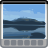
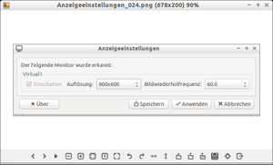
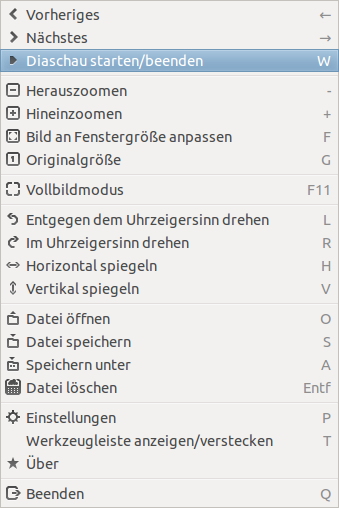

GPicview
Dieser Artikel wurde für die folgenden Ubuntu-Versionen getestet:
Ubuntu 14.04 Trusty Tahr
Zum Verständnis dieses Artikels sind folgende Seiten hilfreich:

GPicView  ist ein kleiner und sehr schneller Bildbetrachter mit geringem Speicherverbrauch. Daher wurde es als Standard-Bildbetrachter für Lubuntu ausgewählt. Er basiert auf der Grafikbibliothek GTK+ und ist auch sehr gut für die andere Desktop-Umgebungen wie GNOME oder Xfce geeignet.
ist ein kleiner und sehr schneller Bildbetrachter mit geringem Speicherverbrauch. Daher wurde es als Standard-Bildbetrachter für Lubuntu ausgewählt. Er basiert auf der Grafikbibliothek GTK+ und ist auch sehr gut für die andere Desktop-Umgebungen wie GNOME oder Xfce geeignet.
Merkmale:
ressourcenschonend und schnell bei geringem Speicherverbrauch
einfache und intuitive Bedienung
ohne Beschränkung auf eine bestimmte Desktop-Umgebung
|  |
| GPicView |
Eine Druckfunktion ist nicht enthalten.
Installation¶
GPicview ist in den offiziellen Paketquellen enthalten. Installiert [1] werden kann das Programm über das folgende Paket:
gpicview (universe)
 mit apturl
mit apturl
Paketliste zum Kopieren:
sudo apt-get install gpicview
sudo aptitude install gpicview
Aus dem Quelltext¶
Möchte man eine aktuelle Version auf einer älteren Ubuntu-Version installieren, muss man es aus dem Quelltext kompilieren [2] und installieren. Dazu werden zwei weitere Pakete benötigt [1]:
libgtk2.0-dev
libjpeg62-dev
mit apturl
Paketliste zum Kopieren:
sudo apt-get install libgtk2.0-dev libjpeg62-dev
sudo aptitude install libgtk2.0-dev libjpeg62-dev
Jetzt wird der Quelltext von GPicView heruntergeladen, das Archiv entpackt [2] und anschließend das Programm kompiliert [3].
Benutzung¶
Navigationsleiste¶
Die Navigation innerhalb des Programms ist intuitiv zu erfassen. Umsteiger werden feststellen, dass die Bedienung der Windows Bild- und Faxanzeige nachempfunden ist. Sie kann entweder mit der Maus oder der Tastatur erfolgen:

| Navigation | ||
| Element | Tastenkürzel | Bedeutung |
| ← | Vorheriges | |
| → | Nächstes | |
| - | Herauszoomen | |
| + | Hineinzoomen | |
| F | Bild an Fenstergröße anpassen. | |
| G | Originalgröße | |
| F11 | Vollbild | |
| L | Bild 90° nach links drehen | |
| R | Bild 90° nach rechts drehen | |
| O | Datei öffnen | |
| S | Datei speichern | |
| A | Datei speichern unter | |
| Entf | Datei löschen | |
| Einstellungen | ||
Achtung!
GPicview löscht Bilder vollständig und verschiebt sie nicht erst in den Papierkorb, wie dies bei anderen Programmen üblich ist!
Tipps¶
Die grundlegende Funktionsweise eines Bildbetrachtungsprogrammes ist selbsterklärend. Deshalb folgen an dieser Stelle nur kleine Tipps, die die Benutzung erleichtern sollen bzw. GPicView erst richtig interessant machen.
Alle Bilder im Verzeichnis durchsehen¶
GPicview öffnet stets alle Bilder ein einem Verzeichnis, d.h. wenn man ein einzelnes Bild betrachtet, kann man mit den Pfeilen alle Bilder sichten. Das ist auch mit den Tastaturpfeilen ← → möglich.
Einstellungen¶
| Einstellungen | |
| Element | Bedeutung |
Ask before saving images | Nachfragen bevor gespeichert wird |
Automatically save rotated immages | gedrehte Bilder automatisch speichern (nur .jpg) |
Make GPicview the default viewer for images | Bilddateien mit GPicview verknüpfen |
 Übersichtsartikel
Übersichtsartikel- Erstellt mit Inyoka
-
 2004 – 2017 ubuntuusers.de • Einige Rechte vorbehalten
2004 – 2017 ubuntuusers.de • Einige Rechte vorbehalten
Lizenz • Kontakt • Datenschutz • Impressum • Serverstatus -
Serverhousing gespendet von